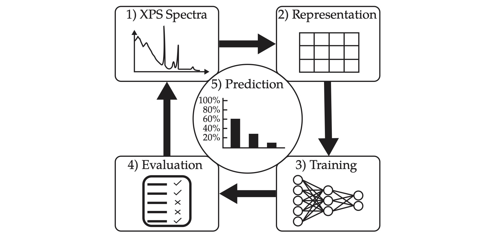
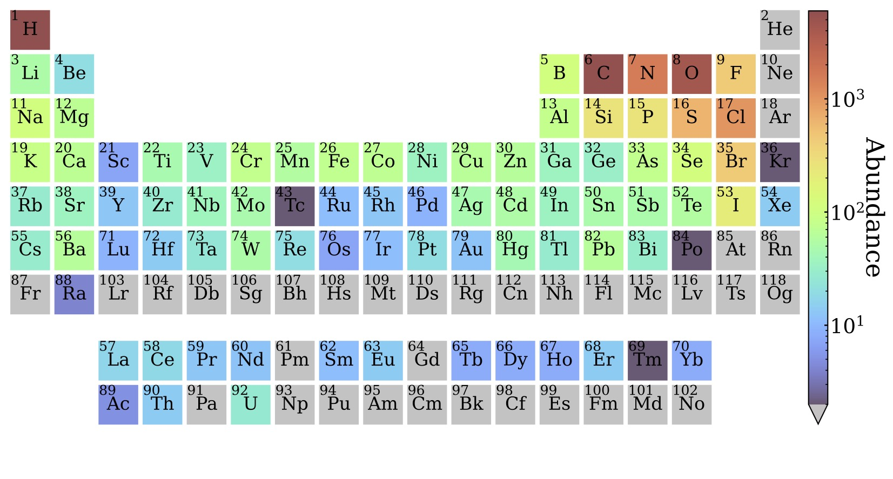
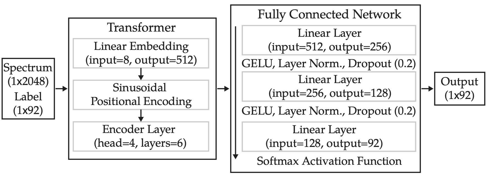
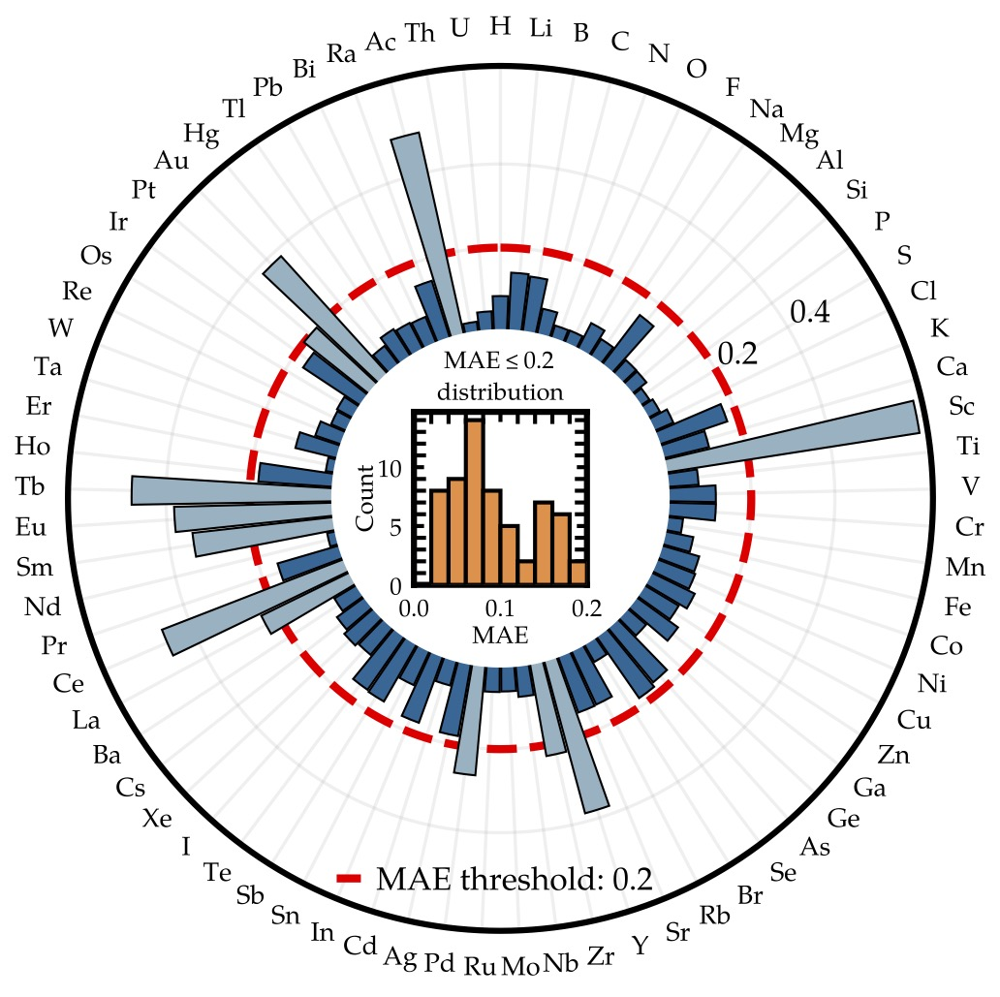
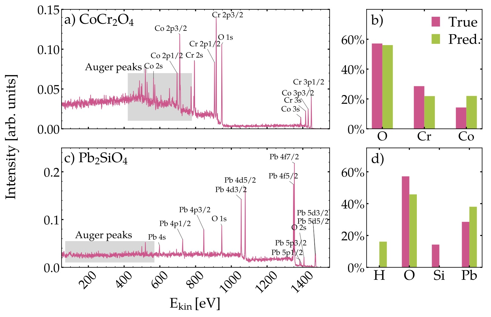

Overview
X-ray photoelectron spectroscopy (XPS) serves as a non-destructive analysis technique for the study of atomic fraction, chemical states or layered structure of materials. In recent years, there has been an increasing trend of users, including those without extensive training in surface science, to combine XPS with other instruments to gain deeper insight into material properties as evidenced by the substantial rise in publications using XPS over the last decade. The present challenge confronting these researchers is twofold: first, the accurate reporting of their measurements in a standardised format, and second, the precise quantitative analysis of their data. A standard spectrum consists of distinct peaks that correspond to core-level photoelectrons and Auger-Meitner electrons, with a background comprising primarily inelastically scattered photoelectrons and secondary electrons. In order to quantitatively interpret a photoelectron spectrum and thereby extract information, such as the thickness of an overlayer material, the atomic fraction, the oxidation state or the relative area of two components in a mixture, researchers will use peak selection and background subtraction algorithms. The next step involves fitting of the main peak shape by describing the peak envelope through a sum of individual Gaussian, Lorentzian or Voigt functions that correspond to individual chemical states. This procedure yields information about the peak area, which can be utilised to calculate the equivalent homogeneous atomic concentration. To address the challenging and time-consuming task of quantitative X-ray photoelectron spectra analysis due to the potentially complex spectral shape resulting from equally complex materials, we created an automated high-throughput analysis pipeline based on a Transformer model. This is achieved by using our Simulation of Electron Spectra for Surface Analysis (SESSA) software (see project "Electron Spectra Simulation") to create a fully quantifiable and well-defined spectral reference dataset. Building on the foundations described by Castle (2006), a well-established theory-based XPS expert system is proposed in this project. At its core lies a Transformer architecture trained on "SESSA-standardised" XPS survey spectra. This expert system instantaneously retrieves information on the chemical composition of arbitrary, yet realistic, bulk compounds. It is worth noting that two additional research papers exist which propose a similar framework based on convolutional neural networks by Pielsticker et al. (2023) and Drera et al. (2020).
Machine Learning Workflow
At present, there is an absence of a substantial, standardised database of experimental XPS data that encompasses the necessary information regarding the experimental conditions, sample preparation, spectral range, and instrument specific quantities, which are prerequisites for the training of a general classification agent. Therefore, we are dependent on SESSA to generate a synthetic dataset with full control over all material and spectroscopy specific parameters. In the present work, XPS survey spectra covering the complete energy range from 50 eV to 1530 eV for an Al K$\alpha$ source in the magic angle configuration (54.7° between source and detector) were simulated. This is the first step in Figure 1 of the machine learning workflow. The dataset is generated by running SESSA in parallel on the Austrian Scientific Computing infrastructure VSC5 on a 128-core compute node with 512 GB RAM and simulating reference spectra for 7587 inorganic and organic compounds under varying spectrometer conditions for peak shifts, peak widths and noise resulting in approximately 9 million spectra that are split into a training, validation and test set. A current dataset with all compounds from the Materials Project already exists, but has not yet been included in the neural network training. The full distribution of elements present in our dataset is presented in the periodic table in Figure 2. Next (2), a suitable representation of the spectrum and the label needs to be defined including normalisation procedures and label representation. In our case, the spectrum is normalised to the area of the squared spectrum and the label is represented as a 92-entry array where each index represents an atomic number and the entry is its elemental concentration. In step 3, the neural network architecture is defined, which is in our case an encoder-only Transformer network serving as the input to a fully connected network, which is trained while, at the same time, the hyperparameters of the network are tuned in step 4 to improve the model performance. This is an iterative workflow as it requires revisiting individual steps in case there are issues with the training data, the label or the architecture. Last but not least, in step 5 we can analyse the performance of the fully trained network on unseen test data including experimental data.
Fully Trained Model
The network comprised 9.6 million trainable parameters and the training and tuning were executed on a single NVIDIA A100 GPU with 40 GB of memory over a period of 18 hours for 30 epochs. The network architecture shown in Figure 3 has been implemented in PyTorch Lightning (see Simperl (2025)). The fully trained model was evaluated on two key properties: first, correctly detecting individual elements within the compounds and second, quantifying the deviation from true concentrations using the mean absolute error of atomic fractions. Overall, we see that about 85% of the materials are correctly classified, i.e. all the present elements are identified. In Figure 4, the mean absolute error on the atomic fraction for each single element present in the test set is shown. In XPS the quantification error for the atomic fraction lies often between 10% and 20% and only with well-calibrated instruments and specific materials it is possible to achieve values smaller than that. We can see that about 81% of the elements are quantified with an error below that experimental threshold, highlighting the potential of such an automated neural network in atomic fraction quantification. In Figure 5, two examples from the test data are given comparing the true atomic fraction with the predicted one. Interestingly enough, in the second example the silicon fraction is not predicted and compensated with hydrogen which is a peak not detectable by XPS. The reason is that the silicon peak due to its lower cross section is hidden behind the lead peaks making it impossible for the model to identify a peak belonging to silicon. On top of that, the model has learned to compensate for the absence of a material with hydrogen.
Outlook
The model described in this project outlines a development path towards an automated, or at least decision-supporting, framework for quantitative XPS analysis. Evaluated on normalised, but otherwise unprocessed, simulated data, the model shows promising performance identifying the constituent elements of a compound and predicting their atomic fractions. The current framework is limited to homogeneous bulk compounds, while in an experiment we typically have materials with several layers of different materials, and almost always a contamination layer of adventitious carbon, physisorbed water or other environmental species introduced during sample handling. In a layered system, even those with only a contamination overlayer, photoelectrons escaping the surface experience attenuation effects, with the effective attenuation length set by the composition and thickness of each layer. This significantly complicates the relationship between the background and peak intensities. SESSA can already simulate layered systems through its existing parameter set, so a natural next step is to extend the spectral database generated in this project to include layered materials, with layer thickness introduced as an additional target quantity that the model learns to infer from the spectrum. In combination with the project on simulating individual chemical states of carbon-based materials another extension is to incorporate additional narrow scan spectra and train the model to also learn spectral shapes to account for individual chemical states.
Gallery




